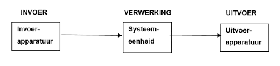

Een computer verwerkt informatie in 3 stappen. De eerste stap is de invoer. De invoer is de informatie die je zelf invoerd via bijvoorbeeld een toetsenbord of een muis. De tweede stap is de verwerking. Tijdens de verwerking worden de gegevens vertaald naar een taal die de computer begrijpt. Meer over deze "taal" in mijn uitleg over het binaire stelsel. De derde en laatste stap is de uitvoer. In deze stap wordt de informatie verwerkt naar iets dat weer wordt teruggegeven. Bijvoorbeeld een alinea tekst op een monitor.
